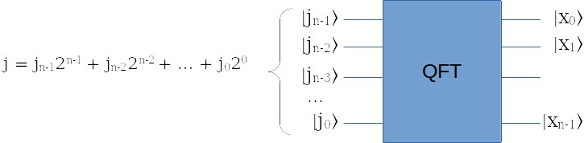
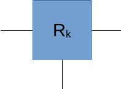
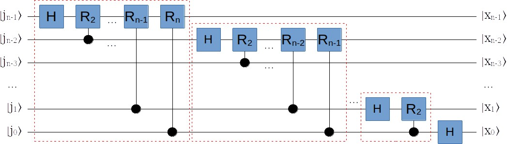

量子傅里叶变换详解 (3) 电路实现
Ping Zhou, 2021-07-12
今天来填个坑 :-) 前面Shor算法系列里大量用到的“量子傅立叶变换”，具体要怎么实现？这次来详细讨论一下。
量子傅立叶变换
前文说过，量子傅立叶变换QFT是这么一块电路：

同样根据前文，当输入n个量子位的基态 \(|j\rangle\) 时，输出可以写成：
\begin{matrix} QFT|j\rangle = \\ \frac{1}{\sqrt{2^n}} \otimes_{l=1}^n \left[ |0\rangle + e^{2\pi ij/2^l} |1\rangle \right] \\ = \frac{1}{\sqrt{2^n}} \left( |0\rangle + e^{2\pi i 0.j_0}|1\rangle \right) \left( |0\rangle + e^{2\pi i 0.j_1j_0}|1\rangle \right) \dots \left( |0\rangle + e^{2\pi i 0.j_{n-1}j_{n-2}\dots j_0}|1\rangle \right) \\ \end{matrix}我们的任务是用基本量子电路门构造这样的变换。
基本构件：受控旋转门
就像搭积木一样，量子傅立叶变换的电路是由很多基本组件构成的。其中最重要的一个组件是“受控旋转门” \(R_k\) ：

这个量子门和CNOT门差不多，有一个控制输入，当控制输入是 \(|0\rangle\) 的时候，输入状态原样输出；而如果控制输入是 \(|1\rangle\) ，就对输入状态绕Z轴旋转一定的角度。旋转多少角度呢？这是由门的参数k决定的，具体来说就是 \(2\pi/2^k\) 。换句话说， \(R_k\) 的作用就是当控制输入为 \(|1\rangle\) 时，给输入作这样的一个变换：
\begin{bmatrix} 1 & 0 \\ 0 & e^{\frac{2\pi i}{2^k}} \end{bmatrix}量子傅立叶变换电路
有了受控旋转门 \(R_k\) ，接下来我们就可以来搭建量子傅里叶变换电路了！
假设量子傅立叶变换的输入有n个量子位 \(|j_{n-1}\rangle, |j_{n-2}\rangle, \dots, |j_0\rangle\) ，我们首先制备一组前面说的可控旋转门： \(R_2, R_3, \dots, R_{n-1}\) （也就是 \(R_k\) 里的k从2到n-1）。
然后把它们这样连接起来：

每个输入量子位都先做一个H变换，然后分别加上一系列的受控旋转变换：
- 对第n-1个输入量子位，加上 \(R_2, \dots, R_{n-1}, R_n\) ，分别由第n-2到第0个输入量子位控制；
- 对第n-2个输入量子位，加上 \(R_2, \dots, R_{n-2}, R_{n-1}\) ，分别由第n-3到第0个输入量子位控制；
- 以此类推 …
- 对第1个输入量子位，加上 \(R_2\) ，由第0个输入量子位控制；
- 对第0个输入量子位，不需要旋转。
我们可以推导一下，这个电路的输出就是我们要的量子傅立叶变换的输出。
例如对第n-1个输入量子位 \(|j_{n-1}\rangle\) ，首先经过一个H变换，变成：
\begin{matrix} \left\{ \begin{array}{ll} \frac{1}{\sqrt 2}(|0\rangle + |1\rangle) & (j_{n-1}=0) \\ \frac{1}{\sqrt 2}(|0\rangle - |1\rangle) & (j_{n-1}=1) \\ \end{array} \right. \end{matrix}这个状态又可以写成 \(\frac{1}{\sqrt 2}(|0\rangle + e^{2\pi i 0.j_{n-1}}|1\rangle)\) 。注意，e指数里的 \(0.j_{n-1}\) 是二进制小数点，所以 \(j_{n-1}=0\) 的话这个指数就是0，而 \(j_{n-1}=1\) 的话是二进制0.1，也就是十进制的二分之一，乘上 \(2\pi i\) 就是 \(\pi i\) ，而 \(e^{\pi i}=-1\) ，这就和上面的式子对上了。
好， 然后这个量子位先后经过 \(R_2, R_3, \dots, R_{n}\) 变换，我们一个一个来看。这里的 \(R_2\) 控制输入是 \(|j_{n-2}\rangle\) ，所以当 \(|j_{n-2}\rangle\) 是 \(|1\rangle\) 的时候，才会对输入作旋转，旋转的角度是 \(2\pi / 2^2\) ，否则就不做旋转（即旋转角度是0）。我们如果把它想象成二进制小数点，这其实就是把 \(j_{n-2}\) 放到了小数点后的第2位，因此经过 \(R_2\) 后状态就变成了：
\begin{matrix} \frac{1}{\sqrt 2}(|0\rangle + e^{2\pi i 0.j_{n-1}j_{n-2}}|1\rangle) \end{matrix}以此类推，经过 \(R_2, R_3, \dots, R_{n}\) 变换后，第n-1位的状态就变成了：
\begin{matrix} |x_{n-1}\rangle = \frac{1}{\sqrt 2}(|0\rangle + e^{2\pi i 0.j_{n-1}j_{n-2}\dots j_{0}}|1\rangle) \end{matrix}再以此类推到其他各个输入量子位，我们可以得到这样的输出状态：
\begin{matrix} |x_{n-1}\rangle = \frac{1}{\sqrt 2}(|0\rangle + e^{2\pi i 0.j_{n-1}j_{n-2}\dots j_{0}}|1\rangle) \\ |x_{n-2}\rangle = \frac{1}{\sqrt 2}(|0\rangle + e^{2\pi i 0.j_{n-2}j_{n-3}\dots j_{0}}|1\rangle) \\ \cdots \\ |x_{0}\rangle =\frac{1}{\sqrt 2}(|0\rangle + e^{2\pi i 0.j_{0}}|1\rangle) \\ \end{matrix}对比一下第一部分的量子傅立叶变换输出，这可不就是我们想要的输出状态？当然，实际使用的时候，输出状态 \(x_{n-1}, x_{n-2}, \dots, x_0\) 可能还要把顺序反一下，这个只需要再加n/2个量子交换门（SWAP）即可。
复杂度
实现这个量子傅立叶变换电路，需要多少个基本量子门？从前面的电路就可以看出，我们对每个输入量子位，需要制备一些受控旋转门 \(R_k\) ，总共需要的数量是 \(O(n^2)\) 级别。其余的辅助量子门，例如H门和SWAP门，数量是 \(O(n)\) 级别。所以量子傅立叶变换的总体复杂度（即需要的基本量子门数量）是 \(O(n^2)\) 。
对比一下，用经典电路实现快速傅里叶变换FFT，其复杂度为 \(O(2^n)\) 。可见量子傅立叶变换相对经典计算机有指数级的加速！
实际上，量子傅立叶变换也是很多量子算法能达到指数级加速的关键所在！
QFT的这个坑填完了，感谢阅读！